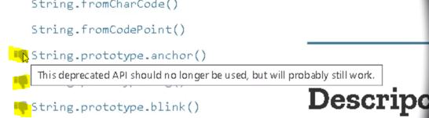
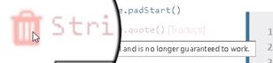
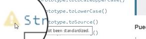
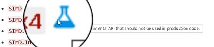

Código Obsoleto
La tecnología se encuentra en constante evolución, esto incluye a los lenguajes de programación de los cuales cada cierto tiempo sufren actualizaciones en las que se añaden nuevos mecanismos o funcionalidades, se corrigen errores y eliminan elementos obsoletos o en desuso.
A la hora de programar o crear un proyecto es importante estar actualizado con los estándares, elementos y recursos en vigencia, en esta sección se desglosará todo lo necesario para comprobar la documentación de un lenguaje, así como saber reconocer el código obsoleto y los problemas que se presentan al trabajar con este.
Reconocer el Código Obsoleto
Deprecated (Obsoleto)
-
Se trata de la traducción al inglés de la palabra obsoleto, se utiliza en la documentación oficial para indicar aquel elemento o código que no se utiliza actualmente, tampoco se recomienda su uso, de este modo será reemplazado en un futuro cercano.
Inútil
-
Se trata de aquellos elementos o código desactualizados que ya han sido eliminados, literalmente no es posible utilizarlos ya que simplemente no funcionan con las tecnologías actuales.
No Recomendado
-
Se trata de todos aquellos elementos que se desaconseja su uso o es mejor usarlos de forma muy puntual, esto se puede deber a múltiples razones, desde un consumo excesivo de recursos, bugs, fallos, inseguridad etc.
El estatus de "no recomendado" no solo se obtiene porque se trata de elementos y código viejo y desactualizado.
Bugs y fallos
-
Esto puede deberse a diversas razones, desde tecnologías muy recientes y experimentales hasta a recursos desactualizados con fallos de seguridad o recursos, se trata de elementos o código que por una u otra razón pueden presentar problemas al emplearse en ciertas circunstancias.
Está por ser Reemplazado
-
Se trata de aquellos recursos, elementos o tecnología que en un futuro cercano será reemplazado por otra opción que realizará su función de una mejor forma, un elemento con este estatus no tiene por qué tener fallos o estar obsoleto al momento presente, sin embargo lo que sí indica este estatus es que a este elemento le resta una vida útil muy reducida.
Existe una Mejor Forma de Hacerlo
-
Este estatus no se refiere solo a recursos o elementos de código, sino también a formas de realizar una acción, esto puede ser por ejemplo que existan dos elementos que comparten algunas de sus funciones, sin embargo uno de ellos consume mucho menos recursos, en este caso en la mayoría de las ocasiones aquel mecanismo con un alto consumo será obsoleto, ya que su implementación no genera ninguna ventaja.
Efectos negativos Aplicados a Métodos, Clases y Propiedades
Uso Excesivo de recursos
Código con Bugs o Fallos
Código Innecesariamente largo
-
SEO
Este aspecto se refiere a que los navegadores como Google fomentan el uso de código actualizado, por lo que aquellas páginas cuyo código cumple con el estándar tienen una mejor posición que aquellas que no.
Del mismo modo que todo lo anterior afecta la experiencia del usuario, resultado en que el SEO (posicionamiento en el navegador) sea peor.
Verificación de código Obsoleto
-
Verificar si tiene o usa funciones, métodos, objetos o metodologías obsoletas
Esto se realiza principalmente al trabajar con bibliotecas, ya que al tratarse de código de terceros que será incluido en la página es necesario revisarlo en detalle.
Nota: 1 de cada 3 páginas utiliza bibliotecas obsoletas.
-
Verificar Sitios Web Basados en Estándares Oficiales
Sitios web como Developer Mozilla y w3schools las cuales son sitios web que difunden las pautas actuales de la documentación oficial de los lenguajes, estas páginas explican el funcionamiento y uso de todos los elementos de un lenguaje, eso incluye elementos desactualizados, no recomendados, experimentales o fuera del estándar, para lo cual se utilizan diferentes tipos de símbolos para indicarlos
Por ejemplo Mozilla utiliza los siguientes símbolos:
-
El símbolo de pulgar abajo es usado por Mozilla para indicar que un recurso o código no es recomendado y probablemente se encuentre obsoleto, lo que significa que no se debe usar y es probable que no funcione.

-
El símbolo de basura en Mozilla indica que el código o elemento se encuentra definitivamente obsoleto, y es muy probable que no funcione.

-
El símbolo de advertencia significa que el elemento o código no es un estándar, por lo que pese a que funcione y no presente fallas es probable que genere problemas de compatibilidad con navegadores u otros elementos.

-
El símbolo de laboratorio representa tecnologías experimentales, lo que significa que no son estándar, es probable que no presenten fallos, pese a esto no se recomienda ya que se encuentran en una etapa muy temprana, sin embargo son recursos en los que se está trabajando para que en un futuro se puedan añadir al estándar.
